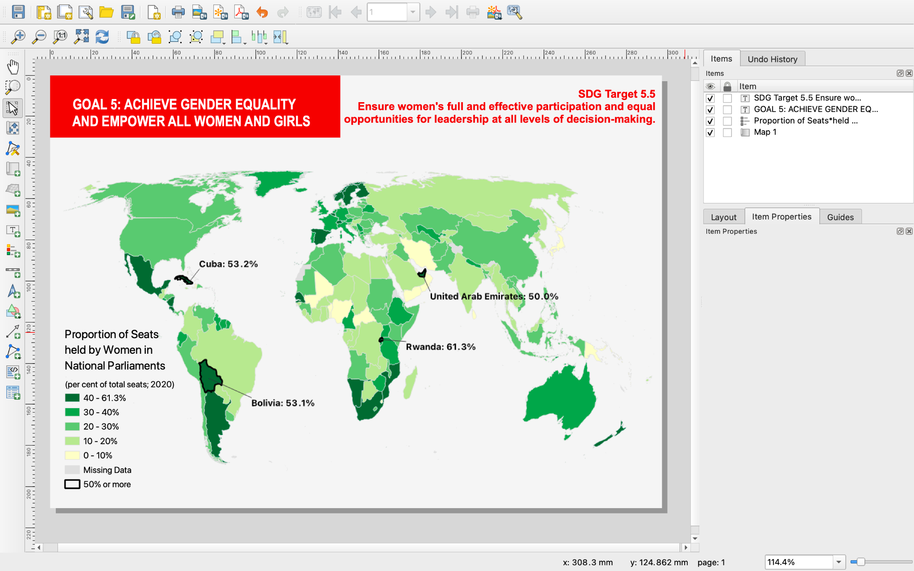
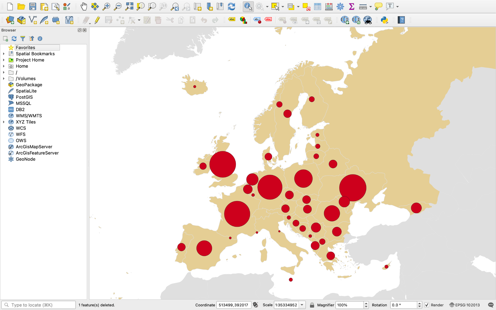

This screenshot displays the final design of the first tutorial on choropleth maps. It replicates the map in the textbook using only QGIS. The choropleth tutorial is the first and most complete, as the other tutorials expect users to remember some of the things they learned from this tutorial.
In 2021 as an undergraduate student at the University of Wisconsin-Madison I began developing these open-source cartography tutorials using QGIS. These tutorials are a supplement to the open-source cartography textbook, Mapping for a Sustainable World, which was written by my undergraduate advisor, Robert Roth, and others affiliated with the International Cartography Association and the United Nations. Their book teaches key principles of cartography using the UN’s 17 Sustainable Development Goals (SDGs).
This textbook did not include any practical tutorials on how to make maps, however. Therefore, I developed three thematic mapping tutorials in the open-source software QGIS to supplement this textbook. These tutorials explain how to make three maps found in the textbook (choropleth, proportional symbol, nominal). All of the design happens in QGIS as well.
These tutorials were designed for individuals who have no prior experience with GIS or cartography. They may also be useful to individuals who know GIS, but have never used QGIS. The tutorials are also designed to be straightforward and use simple language, which should make it easier to translate them in-browser. Additionally, they are written in simple markdown language, making them easy to load even with low or slow data connections. The tutorials also iterate on each other; each one is less detailed than the last, reinforcing learning.
These tutorials were used in workshops hosted by Robert Roth in Zimbabwe and in Austria. Additionally, they have been used in classroom settings by Amy Griffin (RMIT University) and Britta Ricker (Utrecht University).

This is an in-progress screenshot from the proportional symbol tutorial. Lots needs to change in the design, still!
Following these real-world uses, we realized the tutorials needed to be updated. The software had changed, and so had the way the UN housed its data. We then collaborated with Gareth Baldrica-Franklin, a PhD student at UW-Madison, to add new tutorials (including dot density maps and how to export into vector design software) and update them. Additionally, we updated the tutorials to use LibreOffice Calc instead of Microsoft Excel, making the project completely open source.
These tutorials are published on Github and anyone is welcome to use them in classroom, workshop, and personal settings. You may use the tutorials as-is, or fork them to edit your own copy. If you encounter any technical issues while using them, please feel free to make use of the “issues” tab on Github to alert us.
An extended abstract was published on this work in the Abstracts of the ICA from 2021, and we have a forthcoming abstract on the updated version that we presented at a workshop in Aruba in 2026. Additionally, the use of these tutorials in the Austrian workshop resulted in a publication called the Atlas of Sustainability, an open-source publication where master’s students used these tutorials as a starting point to develop maps that think about the UN’s Sustainable Development Goals from a local or regional perspective.